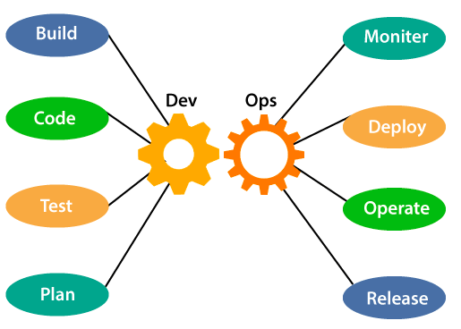
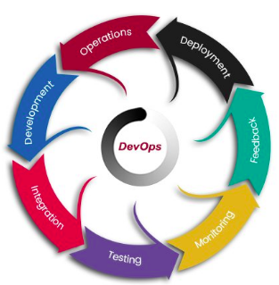
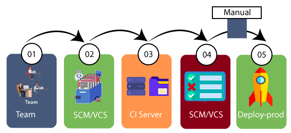
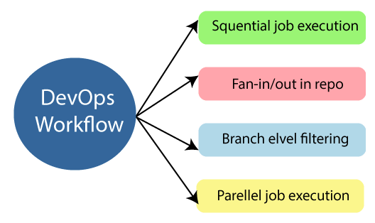
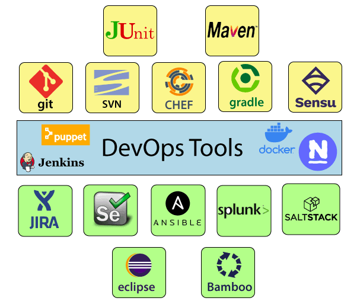
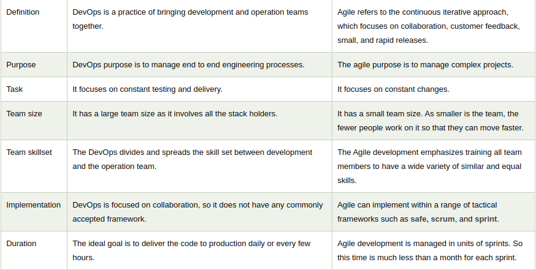
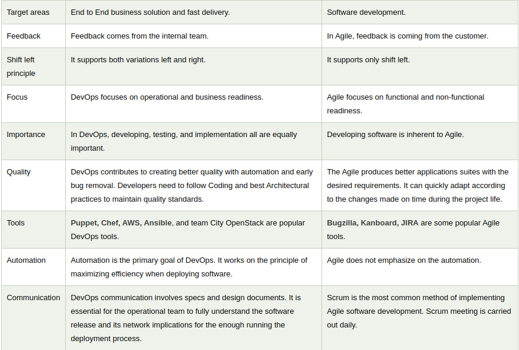

What is DevOps ?
The DevOps is a combination of two words, one is software Development, and second is Operations.
This allows a single team to handle the entire application lifecycle, f
rom development to testing, deployment, and operations. DevOps helps you to reduce the disconnection between
software developers, quality assurance (QA) engineers, and system administrators.
DevOps promotes collaboration between Development and Operations team to
deploy code to production faster in an automated & repeatable way.
DevOps helps to increase organization speed to deliver applications and services.
It also allows organizations to serve their customers better and
compete more strongly in the market.
Why DevOps ?
• The operation and development team worked in complete isolation.
• After the design-build, the testing and deployment are performed respectively.
That's why they consumed more time than actual build cycles.
• Without the use of DevOps, the team members are spending a large amount of time on
designing, testing, and deploying instead of building the project.
Manual code deployment leads to human errors in production.
• Coding and operation teams have their separate timelines and are not in synch,
causing further delays.
DevOps Architecture
Below are the various components that are used in the DevOps architecture:

DevOps Lifecycle
DevOps defines an agile relationship between operations and Development.
It is a process that is practiced by the development team and operational
engineers together from beginning to the final stage of the product.

Continuous Development
This phase involves the planning and coding of the software. The vision of the project is
decided during the planning phase. And the developers begin developing the code for the application.
There are
no DevOps tools that are required for planning, but there are several tools for maintaining the code.
Continuous Integration
It is a software development practice in which the developers require to commit
changes to the source code more frequently. This may be on a daily or weekly basis.
Then every commit is built, and this allows early detection of problems if they are present.
Building code is not only
involved compilation, but it also includes unit testing, integration testing, code review, and packaging.
Continuous Testing
This phase, where the developed software is continuously testing for bugs. For
constant testing, automation testing tools such as TestNG, JUnit,
Selenium, etc are used. These tools allow QAs to test multiple code-bases thoroughly
in parallel to ensure that there is no flaw in the functionality.
In this phase, Docker Containers can be used for simulating the test environment.
Automation testing saves a lot of time and effort for executing the tests instead of doing this manually. Apart from that, report generation is a big plus. The task of evaluating the test cases that failed in a test suite gets simpler. Also, we can schedule the execution of the test cases at predefined times. After testing, the code is continuously integrated with the existing code.
Continuous Monitoring
Monitoring is a phase that involves all the operational factors of the entire DevOps process, where important information about the use of the software is recorded and carefully processed to find out trends and identify problem areas. Usually, the monitoring is integrated within the operational capabilities of the software application.
It may occur in the form of documentation files or maybe produce large-scale data about the application parameters when it is in a continuous use position. The system errors such as server not reachable, low memory, etc are resolved in this phase. It maintains the security and availability of the service.
Continuous Feedback
The application development is consistently improved by analyzing the results from the operations of the software. This is carried out by placing the critical phase of constant feedback between the operations and the development of the next version of the current software application.
The continuity is the essential factor in the DevOps as it removes the unnecessary steps which are required to take a software application from development, using it to find out its issues and then producing a better version. It kills the efficiency that may be possible with the app and reduce the number of interested customers.
Continuous Deployment
In this phase, the code is deployed to the production servers. Also, it is essential to ensure that the code is correctly used on all the servers.

The new code is deployed continuously, and configuration management tools play an essential role in executing tasks frequently and quickly. Here are some popular tools which are used in this phase, such as Chef, Puppet, Ansible, and SaltStack.
Containerization tools are also playing an essential role in the deployment phase. Vagrant and Docker are popular tools that are used for this purpose. These tools help to produce consistency across development, staging, testing, and production environment. They also help in scaling up and scaling down instances softly.
Continuous Operations
All DevOps operations are based on the continuity with complete automation of the release process and allow the organization to accelerate the overall time to market continuingly.
Workflow and principles
DevOps Workflow
DevOps workflow provides a visual overview of the sequence in which input is provided. Also, it tells about which one action is performed, and output is generated for an operations process.

DevOps workflow allows the ability to separate and arrange the jobs which are top requested by the users. Also, it gives the ability to mirror their ideal process in the configuration jobs.
DevOps principles
End to End Responsibility:
DevOps team need to provide performance support until they become the end of life. It enhances the responsibility and the quality of the products engineered.
Continuous Improvement:
DevOps culture focuses on continuous improvement to minimize waste. It continuously speeds up the growth of products or services offered.
Automate Everything:
Automation is an essential principle of the DevOps process. This is for software development and also for the entire infrastructure landscape.
Custom Centric Action:
DevOps team must take customer-centric for that they should continuously invest in products and services.
Monitor and test everything:
The DevOps team needs to have robust monitoring and testing procedures.
Work as one team:
In the DevOps culture role of the designers, developers, and testers are already defined. All they needed to do is work as one team with complete collaboration.
These principles are achieved through several DevOps practices, which include frequent deployments, QA automation, continuous delivery, validating ideas as early as possible, and in-team collaboration.
DevOps Tools

DevOps and Agile


![]()